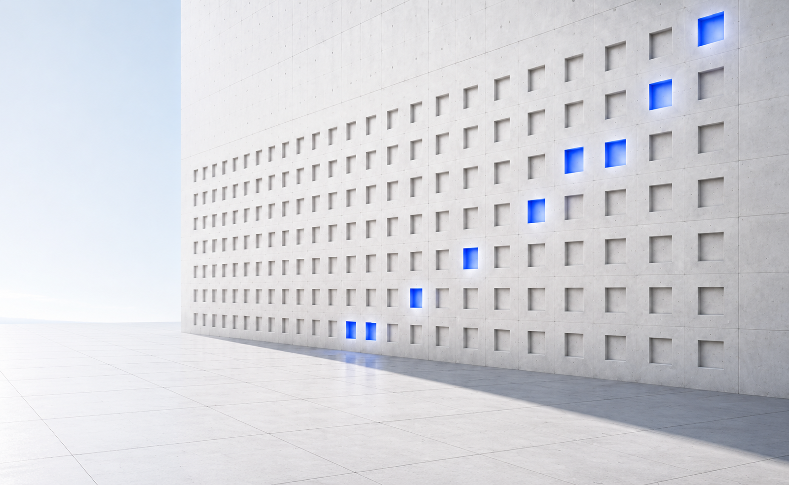
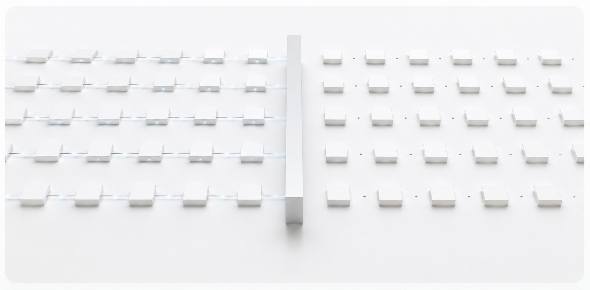
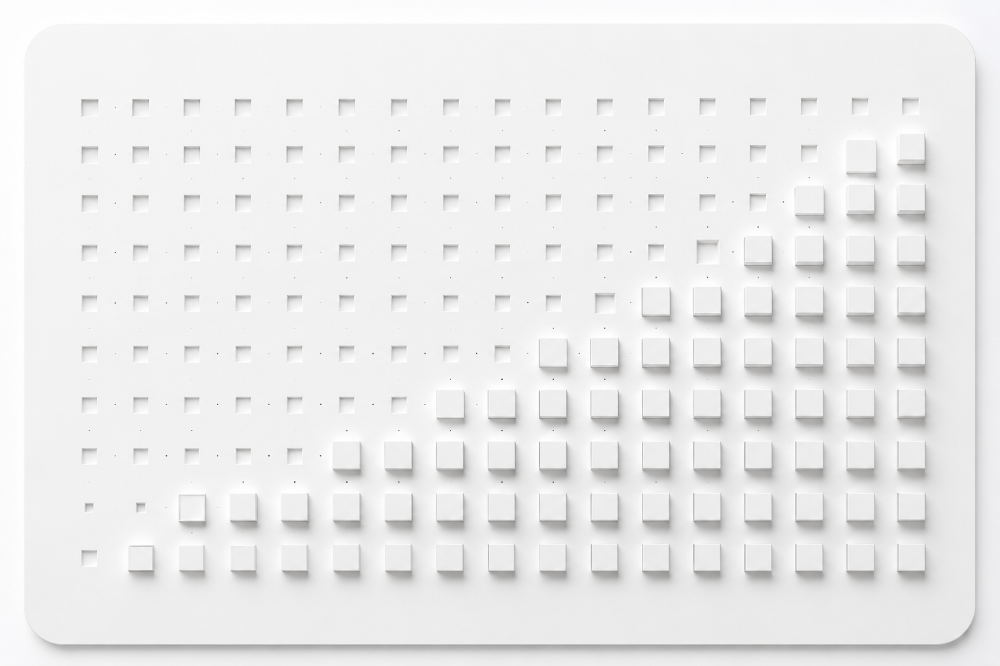

01
Native State Residency
State lives at the core of the system, not on the edge — local, persistent, and continuously available. This eliminates movement and unnecessary sync.

We build native state-resident structural compute architectures, where state stays local, structured, and continuously evolving inside the compute fabric.

State is lost on every pass.
Compute → output → reset. The context that made the last step smart is gone before the next one begins.

State is preserved and compounds.
Structure → compute → controlled transition. What's learned stays resident and accumulates across cycles.
State lives at the core of the system, not on the edge — local, persistent, and continuously available. This eliminates movement and unnecessary sync.
Computation is organized by structure, not sequence. Relationships in the fabric define how compute flows — predictable, efficient, and verifiable.
The compiler maps intent to optimal, deterministic state paths within the fabric. Paths are defined before execution, not discovered at runtime.
State evolves through controlled transitions and deterministic cycles that preserve continuity — activation, transition, and return without reset.
We envision a future where AI systems build on their own experience, continuously creating durable, trustworthy, and scalable intelligence across the real world.